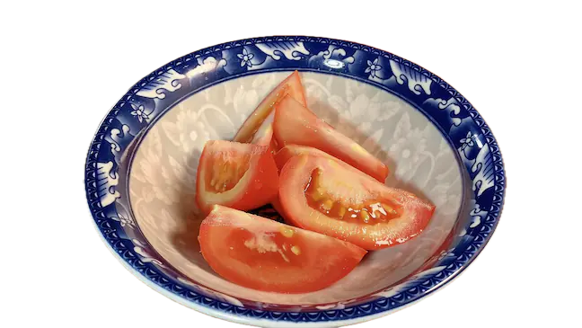
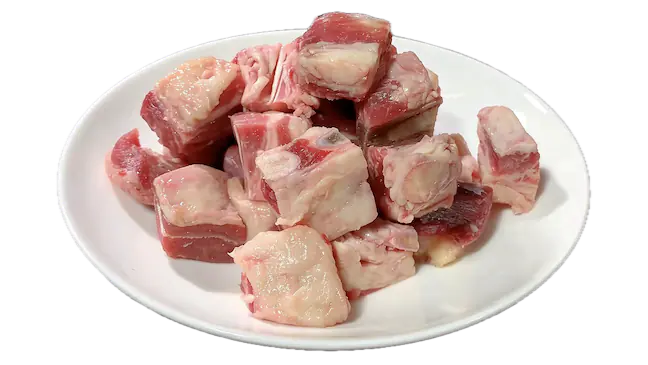
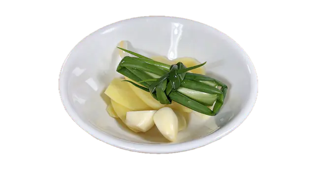
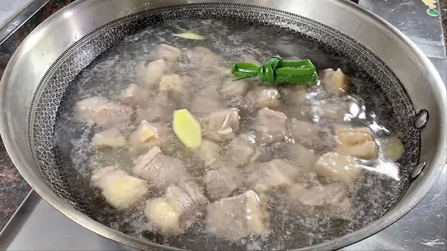
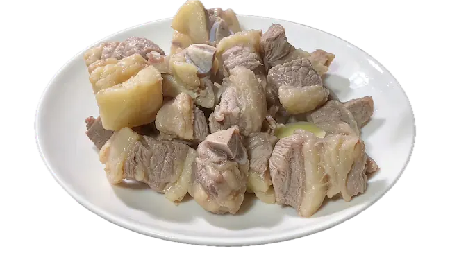
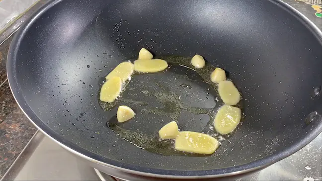
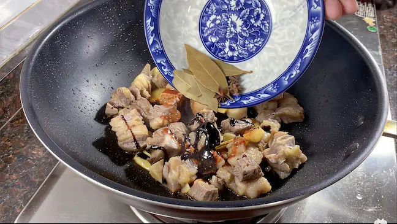
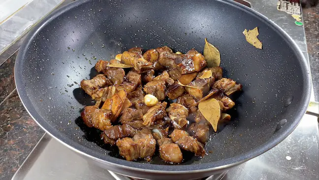
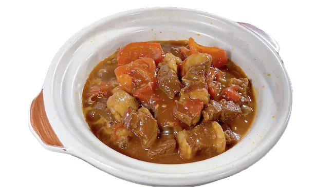

准备食材
番茄、牛腩、蒜、姜、葱、柱侯酱、冰糖、香叶、八角。
- 番茄去皮、切块；
- 牛腩切块；
- 葱结、蒜粒、姜片、少量香料；
柱侯酱本身味道咸鲜醇厚，上色和咸味是足够了的，不需要加太多额外的调料。
也可以准备 老抽、生抽、糖、五香粉 来调味代替酱料。



烹饪
- 起锅放冷水，加入葱结、姜片、料酒，放入牛腩焯水，煮到全熟，把血水全焯出来，去除浮在水面的血沫；
- 取出牛腩，控干水分，捞出备用；
- 起锅烧油，开中火，放入姜片、蒜粒，炒出香味；
- 倒入牛腩，放入香料（1块八角、2片香叶），煸炒表秒微微焦黄；
- 加入柱侯酱，翻炒均匀；
- 往锅边淋入米酒，进一步去腥增香；
- 将调料搅拌均匀后，全部转入砂锅；
- 倒入水，没过牛腩；
- 尝味道，若酱汁有咸涩味，加入少量冰糖（中和香料、酱料咸涩、柔和肉味、提亮色泽），不够补点盐；
- 砂锅小火炖煮2小时，把牛腩炖软烂入味；
- 牛腩炖烂后，倒入番茄，转中火继续炖煮，煮到番茄软烂；
- 想要汤汁浓稠点，可以加少量水淀粉勾芡。





